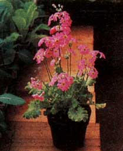
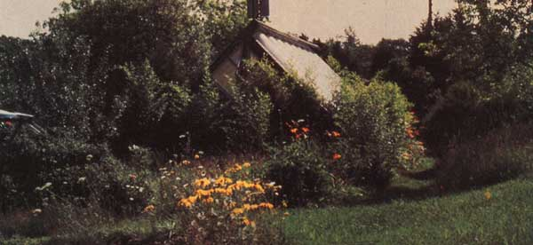
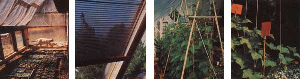
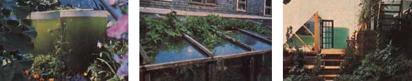
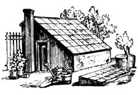
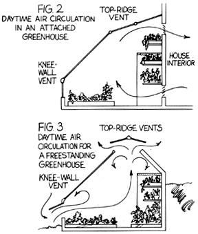
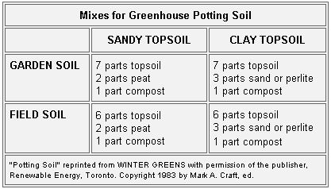
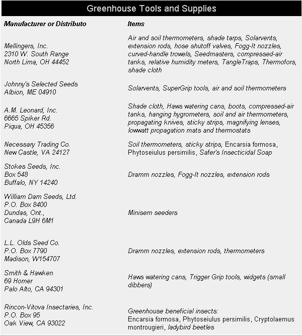
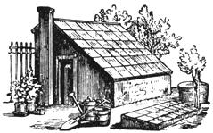

In the early 1970s, when energy costs first began their upward spiral, the accelerating fuel prices drove many commercial glasshouse vegetable producers right out of business. This inflationary upswing also started, in a modest way, a new trend in American gardening.
With the price tag on winter tomatoes and other warm-weather crops on the rise, many people equipped their homes with attached greenhouses, which ranged from expensive, custom-built models to low-budget, low-tech structures composed of plastic-covered frames.
We've now become accustomed to seeing such food- and flower-producing add-ons everywhere. There's no longer any reason to limit a passion for vegetables and flowers to the outdoors. Even those gardeners new to greenhouse management can be successful at indoor horticulture by following four basic rules.
Each attached greenhouse has its own environment, which is created by its location, design, construction, glazing, thermal mass and interior layout. (To expand your knowledge of all these factors, I recommend you consult books 2, 3 and 9 in the "Suggested Reading List" that accompanies this article.)
A solar greenhouse, more than any other type, is sensitive to its surrounding environment. In many ways, this type of greenhouse is analogous to a living plant cell: The sun is its primary energy source, and its glazing acts as a membrane between the inner and outer world, allowing an exchange of heat, light and air. A greenhouse can, in fact, become a miniature ecosystem if the adept gardener can manage the interaction between abiotic factors (such as wind, snow, oxygen, carbon dioxide) and the biological community.
At New Alchemy Institute, we call our greenhouses "bioshelters," because our biotic residents include more than just green plants. The bioshelter grower manages soil that's alive with tiny microorganisms and other animals that break down organic matter into humus. Plant-feeding, plant-pollinating and plant-predaceous insects stake out their own niches. Most of the flora is edible, but a small percentage of space is reserved for herbs, flowers and woody plants. Even the heat storage acts as a substrate for living organisms, since we use transparent water columns laden with green algae and stocked with phytoplankton-feeding fish, or bank huge masses of compost against the north wall. Any grower can become proficient at this type of biological management when treating the greenhouse as an ecosystem. The key is to let nature be your guide.
As the seasons blend one into another, milder versions of the world outside unfold inside the greenhouse. Since each structure is unique, keeping a record of the pilot year is the best way to learn about your under-glass environment. At the very least, enter minimum and maximum air and soil temperatures (6 inches underground) for each week. Other information such as plant vigor, future harvest dates, or insect and disease problems will guide you as you make your seed selection.
Light, temperature, humidity, carbon dioxide, ventilation, water and soil compose the atmosphere within a greenhouse and are interrelated. For example, as the temperature rises, the relative humidity drops. Likewise, under the best lighting conditions, low levels of carbon dioxide will restrict the rate of photosynthesis, limiting plant growth. You must be aware of such interactions and be prepared for some give-and-take in the environmental management of your indoor garden.
LIGHT. All plants require light for photosynthesis, and this essential gardening ingredient can be analyzed in two ways: by quantity and by quality. Quantity is scientifically measured in footcandles (FC). One footcandle is a unit of illumination equal to the direct illum nation on a surface one foot from a standardized source called an international candle. You can, however, obtain a "thumbnail" measure of the amount of light striking a surface in your greenhouse by using a light meter in a 35mm camera.
The quality of light is defined descriptively-bright or direct, diffuse, partial, or shady. Within the greenhouse, diferent locations afford varying light levels (see Fig. 1). The greenhouse's southern section receives plenty of direct sunlight, whereas areas along a northern wall may be shaded. Light beams passing through a translucent glazing (such as fiberglass) scatter, resulting in diffused light without shadows. In front of the greenhouse, deciduous or evergreen trees may obstruct incoming light, creating the same effect. This arrangement is helpful during warm summer months. Partial light occurs when a plant receives only part of a day's sunlight.
Maximizing light and minimizing condensation and shading will improve plant growth during the winter months when light levels are lowest. In greenhouses with partial or shaded light conditions, the gardener's best strategy is to match the right plant with the available light. It's nonsense, for example, to attempt to grow tomatoes in a dimly lit greenhouse in January. Plants that are victims of low light conditions show slow growth, elongated stems, yellow lower leaves, weak and floppy leaves, and phototropism (plants' bending drastically toward the light source).
The amount of light a greenhouse receives will depend on its location, design, and type of glazing. Two or three layers of glazing material will reduce heat loss but will also reduce light levels. Greenhouses with insulated, opaque walls should use as much reflective light as possible. Plenty of white paint on these walls will bounce the light back into the structure.
Supplementary light or artificial light can be used at your own discretion. I'd suggest using this kind of lighting when starting warmweather transplants such as tomatoes, European cucumbers, or peppers early in the year. Whatever the day length at that time, boost it up to 16 hours of light.
In the warmer months, it's equally important to shade the greenhouse, reducing both the amount and intensity of light entering it. Gardeners often overlook this critical step in climatic management. You can apply a commercially available liquid shading compound to glass at various concentrations for the coverage you desire. Eventually, the rain will wash it off: Such compounds are usually nonabrasive, nontoxic, and easy to apply with a spray tank, but shade cloth may be better suited for plastic or polyvinyl glazing. Greenhouse supply companies (see "Greenhouse Tools and Supplies") offer cloth that provides different amounts of shade. For a biological screen, plant vining crops-grapes, melons, cucumbers, and runner beans, for example-in or outside the greenhouse along its southern wall. When the time comes for brighter light, simply pull the crop out. But make sure that you choose vining perennials or shade trees that will be mature during the seasons when the greenhouse requires shading.
Reprinted from GARDENING FOR ALL SEASONS, by The
New Alchemy Institute. Copyright © 1983 by The New
Alchemy Instute. Reprinted with permission of the publisher,
Brick House Publishing Co., Inc., Andover, MA.
Lime:Most of our eastern soils are naturally acidic (and are becoming even more so because of acid rain). Applying pulverized lime will raise the pH into the range where nutrients are available to most plants. There are two kinds of lime: calcitic and dolomitic. The latter contains both calcium and magnesium, both of which are essential for plant growth. If the soil's pH is properly adjusted and of these nutrients is deficient, gypsum (CaSO 4 ) will correct the calcium problem, and epsom salts (MgSO 4 ) will add magnesium without altering the pH.
Blood meal:Dried blood is a natural soil amendment composed of 6% to 12% nitrogen. It may contain small amounts of phosphorus. Blood meal can be applied directly to soils or be used in composting to boost the nitrogen content. Dry fish meal is another alternative and contains about 10% nitrogen.
Bonemeal:Steamed, ground bone contains phosphorus in proportions varying from 15% to 30%. It can be worked into the greenhouse soil or sprinkled on compost.
Rock phosphate:Rock phosphate contains calcium phosphate as its major ingredient, with levels varying from 28% to 32%. This material, which is ground into a powder, is insoluble and is released slowly . . . even more slowly than bonemeal.
Wood ash:Burnt wood ash is an inexpensive source of potassium (3% to 7%). Mixed into the soil, it will raise the pH and provide small amounts of calcium, phosphorus, magnesium, and sulfur. I prefer to add wood ash to compost piles when the greenhouse soil's pH is ideal.
Greensand:This nutrient supplement is dredged from the ocean bottom and is rich in minerals (7% potash). Potassium in the soil will regulate the plant's water absorption and the movement of the liquid through the vascular system. Granite dust and kelp are other sources of potassium.
2] USE THE BEST SOIL
Never underestimate the importance of fertile soil in the greenhouse. We build our soils to provide high fertility, adequate organic matter, multiple nutrient-exchange pathways, and nutrient storage capacities. Diverse populations of bacteria, fungi, and actinomycetes digest organic material; their activity increases both soil fertility and carbon dioxide levels. Earthworms, springtails, ground beetles, and numerous soil animals excavate and aerate pockets and waterways.
More than a quarter of my indoor gardening time is spent on soil preparation or cultivation. That's understandable when you consider that greenhouse soil nutrients are tapped 12 months of the year. On the other hand, since these indoor soils are always warmer, organic matter decomposes at a faster rate.
Constructing a greenhouse garden bed requires three basic ingredients: topsoil, compost, and-depending on your region's soil typesand or clay. Clean topsoil should be the largest portion of your mixture. It's the basis for texture and is the best mineral source for your plants. It should contain 2% to 5% organic matter and have a slightly acid pH factor (between 6.5 and 6.8).
Compost provides many essential plant nutrients (nitrogen, phosphorus, and potassium), and it nourishes the soil's microbial population. Excess compost, however, will cause an imbalance and produce poor soil texture.
I suggest you build a compost pile while your greenhouse is under construction. When the structure is complete, the compost will be ready to work into the beds or containers. Whatever method you prefer for making the pile, let the material cook! In order to kill most pathogens and weed seeds, compost should bake at 180°F for two or three weeks. Before you mix compost into the soil, it should be screened through a 3/8"-mesh handmade cloth to eliminate any bulky material. If your topsoil has a clay base, sand will augment drainage and aeration around the plants' root zones. Use coarse, clean sand, or-if that isn't available-substitute perlite. If your topsoil is sandy or sandy loam, then work clay into the soil mixture.
Use the sources closest to you. Well-decomposed leaf mold, for example, can be substituted for compost or worked into the soil along with compost. The material should be black and crumbly and free from bulky debris. Be aware that undecomposed leaf litter in the soil is an invitation to scavenger pests such as thrips, leafhoppers, and pill bugs. While leaf mold is a well-balanced soil builder, it's often acidic and may need lime to sweeten it. If you are without compost or leaf mold, dehydrated cow or sheep manure is a risky third choice, but never use it while it's fresh.
Before adding any amendments to your batch, though, send a composite soil sample to your agricultural cooperative extension service. Every state has an office to serve you, and the price for soil analysis is a modest $2.00 to $5.00. Most of the reports are easy to interpret, but the agency's recommendations for fertilization may be couched in chemical terms and may be heavy on the dosage. A private testing facility specializing in organic agriculture, Woods End Laboratory (Orchard Hill Rd., RFD 128, Temple, ME 04984), will test your soil for nutrient levels and measure the percentage of organic matter. They'll send a humus chromatogram, which is a visual display of your soil's health.
If the soil is deficient in one or more nutrients, organic measures can remedy the situation. Nitrogen, phosphorus, potassium, calcium, and magnesium are taken up by the plant in larger quantities than are other elements and may be the first to become deficient. Keep in mind, however, that good soil management pays attention to physical as well as nutrient qualities in the soil, and that amendments will not improve soil texture or structure.
You should also practice crop rotation and keep rotation records. Heavy feeders-tomatoes, European cucumbers, peppers, and the like-should be replaced with legumes or root crops. Members of the cabbage family (brassicas), such as mustard, kale, broccoli, cauliflower, cabbage, and collards, should not occupy the same area more than once a year, because recropping with a brassica promotes clubroot, a disease that retards vigorous plant growth. A comprehensive textbook that can aid in understanding plant diseases is George Agrios's Plant Pathology (Academic Press, 1978, $23.25).
Compacted soil can be improved with the introduction of earthworms, peat moss, and leaf mold. Perlite, a volcanic material, can lighten up a nutritionally well-balanced soil.
Excess organic matter, which leads to poor soil structure, results from too much compost in the soil. In your soil-conditioning program, alternate leaf mold with compost . . . and occasionally revitalize the topsoil. Other natural fertilizers, such as seaweed extract, fish emulsion, and manure tea, should also be used.
SPECIAL SOIL MIXES: Our sidebar on special soil mixes is a guide for producing basic potting soil. Tiny, germinating seeds need a premium mix with light texture, good water retention, and adequate drainage.
If your greenhouse has poor air circulation, consider making of buying a sterile seedling mix. Damping-off (also known as rhizoctonia, pythium seed rot, or stem rot), a devastating disease, can wipe out your best batch of seedlings. It's caused by a soilborne pathogen that attacks sprouted seeds, roots, and succulent stems. If you've ever noticed a healthy seedling suddenly flop over with a brown, withered stem at soil level, you've seen damping-off.
If your greenhouse is properly ventilated, then you could try a seedling mixture of one part compost, one part peat, one part perlite, and one part vermiculite or clean sand. Both the compost and peat moss should be screened through a 3/8" wire mesh cloth, and the soil should be thoroughly turned.
Number 9 on the reading list is a fine, though dated, textbook on special soil mixes. In it you can find soil recipes for acid-loving plants, cacti and succulents, orchids, and so on.
WATER: When and how much to water depends on the time of the year, the weather conditions, the type of soil, and the depth of the container or bed. For large beds or boxes, poke your finger into the soil to see if the top inch is dry; if it is, add water. Small pots and shallow beds require frequent watering . . . usually every day.
Most beginners tend to overwater rather than underwater, though. You should, for example, avoid watering on cloudy, rainy, or snowy days. At these times, most solar greenhouses are cool and damp, and the air and soil may be completely saturated.
Watering in the morning will allow the leaves to dry out during the day, reducing the chances that harmful fungi will grow on wet leaves. Botrytis, stem rot, and downy mildew thrive when water coats the leaf surface, and water spots are unattractive on ornamentals-so restrict the water to the soil and keep it off the leaves.
The water should be warm (ideally, 55°F) and dechlorinated. You can preheat the following day's water in your greenhouse in garbage pails or barrels. If you own a large greenhouse, you might consider a subterranean irrigation system. It saves time and puts the water where roots can find it.
Soak the soil thoroughly once-rather than administering many light waterings-and use a nozzle, breaker, or rose to break up the gush of water into tiny droplets. (See "Greenhouse Tools and Supplies," or try your local garden center.) Seed flats, in particular, need a gentle rain of clean, warm water.
[3] GROW WHAT YOU LIKE TO EAT, SMELL, OR LOOK AT
Finally, we can discuss what really counts: the green goods! Now you can appreciate how much effort is put into controlling the environmental factors to enhance the indoor garden. Before we leave physical science, though, remember that the greenhouse environment will determine which crops will thrive there. The successful gardener considers light quality and quantity, photoperiodism, heat requirements, and nutrition for every crop.
PLANNING AHEAD: The next criterion for a productive greenhouse is adequate planning. Mistakes on paper are easier to correct than mistakes cast in the soil. The first year will be the most difficult, because you won't be familiar with the greenhouse's air or soil temperatures. However, with this little manual to guide you and with the listed references as a more comprehensive resource, you should be able to make intelligent guesses.
Whether your interior layout is in beds or benches, design the first season's planting with proper lighting in mind. Which areas have the brightest light, partial light, or shade? In winter, place vining or tall plants where they won't shade medium or lower-canopy ones. Two-or three-strata planting (rows placed like benches in a stadium) makes for efficient space utilization. Resist overcrowding; doing so will pay off in the long run. Cramped plants are vulnerable to diseases and may never reach full size.
Almost everything we grow in our bioshelters at New Alchemy Institute is put there as a young transplant. This practically guarantees 100% survival. (Seed sowing and seedling development are confined to a reserved nursery area.)
After you've selected your crops, figure out how long it will take them to develop to transplant size. Then you'll know when to sow the seeds. For example, I transplant my fall crop of tomatoes in late July, and-since tomato seeds germinate in three to five days and require five to six weeks to mature into hefty-size seedlings-I must sow them in mid-June.
Devise your planting schedule for a 12-month period. Account for sowing, plant development, and harvest. Select vegetables that yield for long periods. (A friend once harvested tomatoes from the same plant for 16 months!) Adjust your timetable to the climate and weather conditions in your area.
SUCCESSION PLANTING: Within the greenhouse's. cool and warm seasons, there's some flexibility about when you can sow your crops. Use this to your family's advantage by budgeting your planting space. For simplicity, let's say your greenhouse has three growing beds, all with similar light quality. Plant the first bed on January 1 with Burpee's Green Ice loose-leaf lettuce and Deci-Minor, a butterhead lettuce. Two weeks later, plant Grand Rapids Forcing looseleaf lettuce and a Dutch original buttercrunch, Ostinata, in the second bed. On February 1, plant the third bed with a heat-resistant loose-leaf called Oak Leaf and with All the Year Round, a slow-tobolt English butterhead. You'll begin to reap the benefits of your labor at the end of February and continue to harvest through midMay.
SEEDS AND SEEDLINGS: Whatever crops you choose to grow, quality seeds will offer the best beginning. I often select hybrids that are bred for greenhouse culture or for disease resistance. However, many open-pollinated varieties rival these more expensive competitors. Generally speaking, most of your leafy vegetables can be ordinary garden cultivars, but you should choose specialty varieties of European cucumbers, tomatoes, cauliflower, lettuce, primula, stock, and gerbera. (See "Seed Companies for Greenhouse Culture.")
When sowing seeds, read the package! Following the directions on such important cultural instructions as soil temperature, depth of planting, refrigeration, or light requirements can increase your crop's germination percentage. In general, lettuce, kale, Chinese greens, endive, chard, sweet peas, nasturtiums, and calendula prefer cool soils (60°-70°F).
Tomatoes, peppers, melons, European cucumbers, and most annual flowers require a warm soil (70°-80°F). Poor seed germination usually is a result of improper or inconsistent soil temperatures. A propagating mat, which provides a constant soil temperature, will speed up seed germination and reduce losses due to damping-off. Made of heating cables sandwiched between vinyl coatings and regulated by a thermostat, it's a costly investment (about $110), but it's truly worth every cent. (A simpler method of providing constant bottom heat is to rest the seeded trays or packs on top of your refrigerator.)
A few vegetable favorites for cool greenhouses are described brief ly below. Southern growers, however, may have a wide; selection to choose from and more flexibility in planting times.
Lettuce, both loose-leaf and butterhead varieties, can be grown indoors from August through May, but true iceberg lettuce is strictly an outdoor crop. Lettuce varieties that have been bred for forced culture perform the best in winter months. Around the winter solstice, growth rate may be slow (regardless of variety), especially if soil temperatures drop below 55°F. The plants need proper spacing to reduce any problems with botrytis. The red-tipped varieties such as Merveille des Quatre Saisons, Ruby, and Prizehead will put color pizzazz in your salad.
Endive is a calcium-rich green that's related to chicory. Its flavor is bitter, compared with mild lettuce, so-two weeks before harvest-blanch the lower section to sweeten its taste. Endive often bolts by early February and should be used as a fall and winter green.
Pak choi (bok choy)is a favorite Chinese vegetable whose name means "flowering white cabbage." Its succulent white stem and dark foliage are relatively hairless, compared with those of other Oriental brassicas. The time from seed to harvest can be as short as 60 days. It, too, will bolt in late winter. The tiny flowerets are entirely edible. Pinch off the terminal bud to encourage bushy growth.
Chinese cabbage is the term for dozens of different varieties, which are divided into two categories: loose-heading and heading. Many are hairy plants that are best for stir-frying. The pale green, tender, blockish types are more productive but less conducive to leaf-by-leaf harvesting. In winter, this vegetable is three times as productive as lettuce. Some varieties stand 20" tall.
Swiss chard can be grown indoors year-round. Chard is a hardy green that can withstand much abuse. Dig it up from the garden in late autumn, then replant it in your greenhouse. Both the root and leaves are edible. Tender, immature beets (cousins of Swiss chard) can be brought in from the outdoor garden, too. Both are susceptible to damage from thrips.
Kale and collards are two leafy members of the cabbage family that do best as fall or winter crops. Kale can grow to two or three feet in height, but collard buds should be pinched off at the top of the plant. This pruning initiates lateral growth that creates a bushy plant. Both kale and collards are vulnerable to aphid infestation.
Summer turnips- sharp, mustardlike greens with white globeshaped roots-can be sown directly into the soil or planted as young seedlings. They can be grown under low light conditions, unlike radishes, which require brighter light and a longer day. Tokyo Cross Hybrid, a wintertime favorite, takes only 45 days from seed to harvest.
Celery thrives in rich, sandy-loam soil. Like parsley, its cousin, celery may take three weeks or longer to germinate . . . and another six weeks for the vegetable to reach transplant size. Space the plants 10" apart with 1' between each row. One month before harvest, blanch the bottom part of the stems by mounding soil around the bases of the plants, or block out the light there with boards. Celery guzzles both water and nitrogen. Watch out for aphids. For an extended harvest, pick only the outside stems at first.
From late winter on, the year races with endless greenhouse activity. Home gardeners start bedding plants for outdoors and for indoor spring crops of cauliflower, tomatoes, and cucumbers.
In the warm season, the use of vining or trellised crops will maximize the growing area. Keep tomatoes, European cucumbers, melons, and pole beans to manageable heights (usually no more than 6' tall). Pruning extra growth every week encourages higher productivity, better air circulation, and prettier shapes. The fruiting vegetables require plenty of water (particularly on sunny days) and a steady diet of all the essential plant nutrients. Monthly side-dressings of sifted compost protect exposed roots and replenish easily leached nutrients such as nitrogen, potassium, and sulfur.
The following notes on tomato, cucumber, melon, and pepper culture are only tips, but you can find a wealth of written information on growing such crops under glass. If you've decided to grow flowers, you'll be glad to know there's even more information available. The newly revised Organic Gardening Under Glass (see number 1 on the reading list) is devoted primarily to ornamental horticulture.
Tomatoes, the favorite greenhouse crop, can be grown to extend your summer harvest into fall or spring. Plant them when soil temperatures reach at least 55°F. Air temperatures should approximate 75°F during the day and 65°F at night. Select indeterminate tomato varieties, and have your trellis or poles ready when you set out the crop. If you suspect you already have a whitefly problem in your greenhouse, set up sticky yellow traps to lure the adult insects away from the crops. If you're using containers, provide each plant with a five-gallon pot. Tomatoes require plenty of phosphorus and potassium in order to flower and set fruit. Fertilize or top-dress each plant with compost every two weeks. At midday, gently shake each plant to encourage better pollination and more fruit, and prune off the vegetative growth called suckers. Sweet 100 and Park's Whopper VFNT perform well in solar greenhouses.
Peppers can provide an excellent late-summer crop. Sow the seeds in May, and grow them outdoors in one-gallon pots until August. In the afternoon, transplant the peppers into a bed or into a larger container. Watering with a seaweed solution helps revitalize the crop after transplant shock. Peppers prefer a well-balanced soil, proper spacing (18" apart, 18" between rows), and bright or partial light. Green bell, banana yellow, jalapeno, and sweet and hot cherry peppers can all be grown indoors. Peppers are highly susceptible to aphid infestation.
European cucumbers, "burpless" and thin-skinned, are long (14"15") and weigh more than a pound each. They're a vining crop that doesn't require pollination to fruit. (Nearly all of the flowers are female.) The seeds are expensive ($7.00 to $8.00 for 25 seeds), so you may want to split a package with a neighbor. However, when stored under the right conditions, the seeds are viable for two or more years. What's more, one plant can easily yield 35 pounds of cucumbers! This crop requires high levels of nitrogen and frequent irrigation. (The Stokes Seed Company provides detailed cultural instructions with its seeds.) Powdery mildew and bacterial wilt are common diseases. Cucumbers also attract whiteflies, spider mites, and thrips.
Melons, a popular crop for northern growers, must have soil temperatures of 60°F and up. They can be trellised if the fruit is supported with netting (or retired panty hose) tied to the trellis with wire or cord. Higher yields are obtained by artificial pollination. (At midday, take a camel-hair, thin-tipped paintbrush . . . insert it into a male flower . . . and then transfer the yellow pollen onto a female flower.) Ambrosia Hybrid and Charantais produce four- to eight-pound, salmon-fleshed cantaloupes.
Seed Companies for Greenhouse Culture
Johnny's Selected Seeds, Albion, ME 04910
Stokes Seeds, Inc., Box 548, Buffalo, NY 14240
Tsang and Ma International, P.O. Box 294, Belmont, CA 94002
(Oriental vegetable seeds)
George W. Park Seed Co., Inc., P. 0. Box 31, Greenwood, SC 29647
Epicure Seeds, P.O. Box 450, Brewster, NY 10509
Kitazawa Seed Co., 356 W. Taylor St., San lose, CA 95110
[4] WATCH FOR INSECTS AND DISEASE
The first step in disease and insect control is watchful prevention. When problems go unnoticed, the situation quickly becomes uncontrollable. Pruning off old or dead leaves, removing diseased plants, and keeping the greenhouse clean can minimize such disasters. Give your used pots, flats, and plant containers a brisk brushing in soapy water . . . rinse them in a 50/50 chlorine bleach-water solution . . . and let them dry in the sun.
Isolate new plants for two weeks before bringing them into the greenhouse, and scrutinize their soil, leaves, stems, and flowers for tiny insects. A 10X field glass magnifies such minuscule creatures as spider mites, thrips, and immature whiteflies.
Hands, clothing, and shoes are common carriers of disease, so be sure to wash your hands after working with diseased plants. Never smoke inside the greenhouse, since tobacco mosaic virus can be spread by smokers onto tomatoes and peppers. If you do smoke, disinfect your hands before working with plants.
Select disease-resistant varieties. Often the name of a variety includes abbreviations for diseases that the plant has been bred to resist or tolerate. For example, Roma VF is a tomato that is resistant to both verticillium and fusarium wilt.
Periodically, inspect your indoor garden so that you can spot problems before they get out of hand. Well-balanced soils, proper nutrition (no excesses), watering, and ventilation reduce stress in plants and, in return, allow them to ward off pests and diseases.
At New Alchemy, we depend on cultural, mechanical, biological, and nontoxic chemical means for controlling such common insect pests as aphids,. whiteflies, spider mites, thrips, mealybugs, and scale . . . and our four-step procedure should work for you, too.
STEP ONE: Since many insects assume different forms over the course of their development, learn about the insect's life cycle and become familiar with its various stages. (For guides to the identification of common greenhouse pests, consult 2 and 3 in the reading list.)
STEP TWO: Conduct an insect check. Even though the plantfeeding insects are not always pests, it's prudent to keep an eye out for them. Be on the offensive. Once a week, wander through the greenhouse and seek out potential foes. Flip the leaves over to check the undersides. Don't deceive yourself; once you've discovered an intruder, keep tabs on it, because you can count on more coming. People often ask, "How many are too many?" A general rule of thumb for vegetables is that if more than one-third of the leaf surface (underside or topside) becomes infested with herbivorous insects, additional treatment is necessary. For ornamentals, infestations over one-eighth (or in some cases even less) of the leaf area indicate a need for control.
STEP THREE: Have a control program available. Diversify strategies so that the tactics are those least disruptive to natural controls and least hazardous to human health and the environment. Never depend on only one control measure. Combine cultural, mechanical, physical, and biological controls.
Cultural practices that can diminish insect problems include sanitation, weed control, and using the least amount of nitrogen compatible with adequate plant growth, because nitrogen is a proteinbuilding material for the progeny of many insect pests.
Selecting varieties that may be unappealing to pests is another cultural control. For example, tomato plants with especially hairy leaves discourage the tomato leaf miner.
Mechanical and physical controls include hand-picking (or the "squish" technique), quarantining new plants, or trapping insects with sticky yellow cards. An attractive trap plant is nasturtium, which attracts aphids, whiteflies, spider mites, and thrips. '
Biological control is an approach that employs predatory and parasitic insects or other organisms to control insect pests. Natural enemies may be indigenous to your area, or you may purchase them from an insectary.
STEP FOUR: Evaluate the control program to determine the success of treatment actions. The following are suggestions for an int egrated pest management program for common greenhouse pests:
Aphids are small, pear-shaped insects. The green peach aphid ( Myzus persicae) is the most common. However, many other aphids can enter the greenhouse. Adults are approximately 1/16" to 1/5" long. Wingless nymphs vary in color, but they have the same shape as adults. Adult aphids can be winged or wingless. Green peach aphids are pale green and well-camouflaged on foliage. Favored host plants are peppers, cabbage-family members, lettuce, dill, snapdragons, and pansies
. Cultural control: Do not overfertilize. Prune off heavily infested leaves. Hose off aphids with cool water.
Biological control: Native predators include ladybird beetles, green lacewings (Chrysopa carnea), syrphid flies, and predaceous midge larvae called Aphidoletes aphidimyza. Native braconid wasps will parasitize aphids in the warn season. Ladybird beetles (Hippodamia convergens) can be purchased through commercial insectaries.
Chemical control: Insecticidal or household soap will kill aphids but will also kill different stages of beneficial insects. Use sparingly.
Greenhouse whitefly(Trialeurodes vaporariorum): Adults are white, flylike, and 1/20" to 1/12" long. Nymphs are pale green, translucent, and have flat scales with waxy filaments. A 10X field glass is necessary to see the immature stages. Favored host plants are tomato, European cucumber, tobacco, melon, calendula, some geraniums, fuchsia, lantana, petunia, arid nasturtium.
Cultural control: Hairy plants have the best protection.
Mechanical control: Sticky yellow traps, which you can make or buy, set out by a plant's tip growth will lure adults and snag them on the gooey substance. Use the traps early in the season, and remove them once Encarsia formosa (see below) has been introduced into the greenhouse.
Biological control: A specific parasitic wasp, Encarsia formosa, 1/32" long, is available from many insectaries and is a successful biological control agent when whitefly populations are low and greenhouse temperatures are warm (75°F). Encarsia is not effective during the winter months.
Chemical control: You may spot-spray tip-growth areas with insecticidal or household soap, but this is harmful to Encarsia.
Spider mite(Tetranychus urticae): Adult spider mites are very small (1/32"), oval-shaped, and yellowish, with two black spots on their backs. A symptom of spider-mite damage is bronzish mottling on the leaves and thin webbing between the petiole and stem. Favored host plants include European cucumbers, peppers, grapes, and many ornamentals.
Cultural control: Misting the plant and increasing the relative humidity inside the greenhouse will discourage spider mites. These pests thrive under hot, dry conditions and can frequently be found in one hot spot in the greenhouse.
Biological control: A predatory mite, Phytoseiulus persimilis is commercially available. Introduce the predatory mites at the first sign of spider mites. The predators desiccate at temperatures of about 80°F. If your greenhouse temperature exceeds this limit, try Amblyseiulus californicus, which, unfortunately, does not search for spider mites as well as P. persimilis does. In either case, an annual stocking is usually necessary.
Chemical control: A 50/50 water-alcohol solution may reduce spider mites, but do a test spray before treating the entire crop.
Thrips(Thrips tabaci or Heliothrips haemorrhoidalis): These tiny, slender, rodlike insects are 1/25" long and have a hard exoskeleton. Adults are brown, and nymphs are creamy white; both hide under leaf veins, flower buds, and petals. Favored host plants are European cucumbers, melons, peppers, marigolds, gladioli, African violets, and many ornamentals.
Cultural control: Maintain good sanitation. Prepupal and pupal stages rest in leaf litter on soil beds. Eliminate any highly infested leaves, or remove the entire plant
. Mechanical control: Mist leaves and dust with diatomaceous earth if the thrip population is low. Scrape the top 1/2" of the soil away from the infested plants.
Biological control: The predatory mite Amblyseiulus californicus will prey on thrips at a slow rate. Both green lacewings and Orius insidious, the minute pirate bug, will also help control this pest, and both are indigenous to North America.
Mealybugs: There are many different kinds of these white, soft, segmented, oval insects. Between 1/5" and 1/3" long, they are usually covered with a whitish, powdery, waxlike material. Females and nymphs are wingless and are found most frequently on tropical plants. Favored host plants are banana, bamboo, ginger, citrus, and many ornamental houseplants, especially orchids.
Cultural control: Dislodge mealybugs by hosing them down with water. Quarantine new plants and discard any infected plants.
Biological control: A predatory beetle, Cryptolaemus montrougieri, is available at commercial insectaries. This Australian lady beetle is 1/4" long, with a black body and orange head. The larvae look like mealybugs. They prefer warm temperatures (75°F). A commercially available wasp, Leptomastix dactylopii, will parasitize the citrus mealybug.
Scale: There are several species of both soft scale and armored scale. Scale insects, like mealybugs, are plant suckers that distort and yellow afflicted leaves. Females are found on the undersides of leaves and stems. A female and her young live under a protected, waxy covering. Favored host plants are tropical fruit or ornamentals, especially philodendrons, palms, and orchids. (See Backyard jungle on page 174 for more information on scale insects.)
Cultural control: Dislodge scale with a forceful spray of water. Peel off any loose sheath tissue that scale could hide behind. Prune off damaged leaves.
Biological control: Green lacewings and Australian beetles (Cryptolaemus montrougieri) will feed on scale. A parasitic wasp, Metaphycus helvolus, provides variable control of several soft-scale species. All three biological-control agents are commercially available.
Chemical control: Insecticidal or household soap can be applied if beneficial insects are not being used.
AN ECOLOGICAL PARADISE
As the years slip by, you will become more and more familiar with your greenhouse and all of the living creatures associated with it. At that point, what was a greenhouse may evolve into a paradise.
I hope this guide will help you make your greenhouse productive and lush. Whatever the season of the year, keep your green thumb up!
Suggested Reading List
[1] Organic Gardening Under Glass, George "Doc" and Katy Abraham, 1984 ($10.95, Van Nostrand Reinhold Co., New York, NY).
[2] Winter Greens, Mark A. Craft (editor), 1983 ($12.95, plus $1.93 shipping and handling, Firefly Books, Ltd., Scarborough, Ontario, Canada).
[3] The Complete Greenhouse Book, Peter Gregg and Derry Watkins, 1979 ($10.95, Garden Way Publishing, Charlotte, VT).
[4] Gardening for All Seasons, Gary Hirshbert, Tracy Calvan, and Merryl Alber (editors), 1983 ($12.95, Brick House Publishing, Andover, MA).
[5] Identifying Diseases of Vegetables, A.A. McNab, A. F Sherf, and J.K. Springer, 1983 ($8.00, plus $2.00 shipping and handling, Pennsylvania State University, College of Agriculture, 401 Agricultural Administration Bldg., University Park, PA 16802).
[6] The Greenhouse Environment: The Effect of Environmental Factors on Flower Crops, John Mastalerz, 1977 ($30.95, John Wiley and Sons, Inc., New York, NY).
[7] Introduction to Insect Pest Management, Robert Metcalf and William Luckmann, 1982 ($32.50, John Wiley and Sons, Inc., New York, NY).
[8]The Bountiful Solar Greenhouse: A Guide to Year-Round Food Production, Shane Smith, 1982 ($8.00, John Muir Publications, Sante Fe, NM).
[9J The Complete Book of Greenhouse Gardening, Ian G. Walls, 1973 (Quadrangle Press, New York Times Book Co., New York, NY). Although this book is out of print, you may be able to locate a copy at your public library.
EDITOR'S NOTE:Colleen Armstrong is a professional greenhouse gardener at the New Alchemy Institute. For the past seven years, she has managed the institute's bioshelters and has conducted research programs in vegetable varietal testing and biological control of glasshouse insect pests. Currently, her research concerns the use of Aphidoletes aphidimyza for controlling the green peach aphid in solar greenhouses. The New Alchemy Institute is a 15 year-old, nonprofit organization conducting research, demonstrations, and educational and outreach programs to promote food, energy, and shelter systems that are environmentally sound and economically efficient. Membership in the institute is $35 a year and includes a subscription to the New Alchemy Quarterly, which contains reports on the institute's work, and articles by other researchers in biological agriculture and appropriate technology . . . 20%offthe price of all institute publications and courses . . . and free admission to its "Farm Saturday" programs. Membership dues (tax deductible) are used to support research, demonstration, and education programs. To become a member, send a check or money order to the New Alchemy Institute (Dept. ME, 237 Hatchville Rd., East Falmouth, MA 02536). To receive further information about the institute, send a postcard with your name and address.
And those of you with a yen for winter grown vegetables but not enough ready cash to splurge on a greenhouse can turn to page 104.
|
 Inside a pastic-sheeted greenhouse... a thermal night curtain... pole beans provide a biological shade... homemade ""sticky card"" whitefly traps |
 Water tanks provide heat strorage, fish and fertilizer... grapevines can provide shade...a well-designed greenhouse can be a mini-ecosystem. |
 Reprinted from GARDENING FOR ALL SEASONS, by The New Alchemy Institute. Copyright ? 1983 by The New Alchemy Instute. Reprinted with permission of the publisher, Brick House Publishing Co., Inc., Andover, MA. |
|
 |
 |
 |
|
|
 |
|
|
 |
|
 |